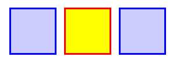
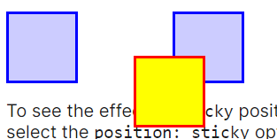
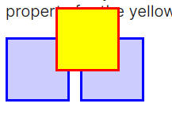
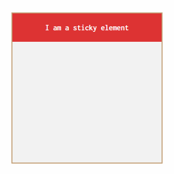
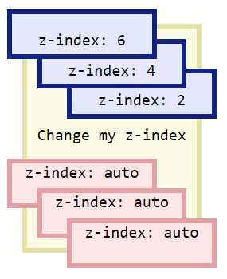

| position: static; |
static |
The element is positioned according to the Normal Flow of the document. The top, right, bottom, left, and z-index properties have no effect. This is the default value. |
 |
| position: relative; |
relative |
The element is positioned according to the normal flow of the document, and then offset relative to itself based on the values of top, right, bottom, and left. The offset does not affect the position of any other elements; thus, the space given for the element in the page layout is the same as if position were static. |
 |
| position: absolute; |
absolute |
The element is removed from the normal document flow, and no space is created for the element in the page layout. The element is positioned relative to its closest positioned ancestor (if any) or to the initial containing block. Its final position is determined by the values of top, right, bottom, and left. |
 |
| position: sticky; |
sticky |
The element is positioned according to the normal flow of the document, and then offset relative to its nearest scrolling ancestor and containing block (nearest block-level ancestor), including table-related elements, based on the values of top, right, bottom, and left. The offset does not affect the position of any other elements.
This value always creates a new stacking context. Note that a sticky element "sticks" to its nearest ancestor that has a "scrolling mechanism" (created when overflow is hidden, scroll, auto, or overlay), even if that ancestor isn't the nearest actually scrolling ancestor. |
 |
| position: fixed; |
fixed |
The element is removed from the normal document flow, and no space is created for the element in the page layout. The element is positioned relative to its initial containing block, which is the viewport in the case of visual media. Its final position is determined by the values of top, right, bottom, and left. |
 |
z-index: auto
z-index: (-/+)(integer) |
z-index |
Overlapping elements with a larger z-index cover those with a smaller one. |
 |